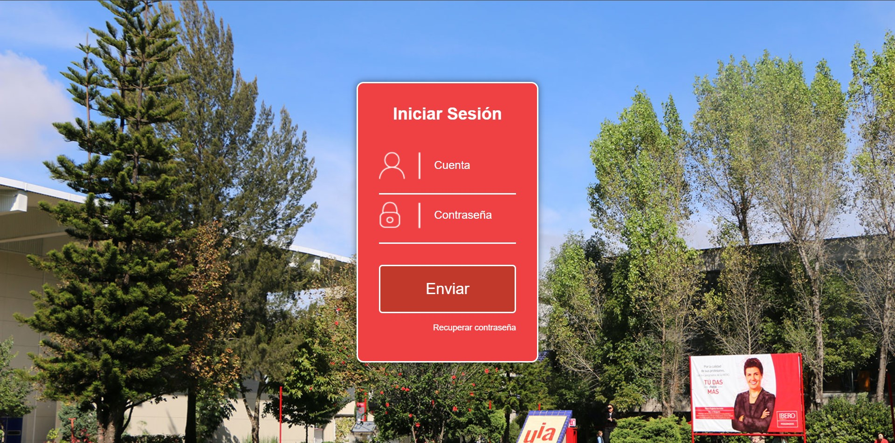

Práctica: Replica de inicio de sesión de Intrauia y Moodle
Resumen
En esta actividad, replicamos los sistemas de inicio de sesión de IntraUIA y Moodle de la Ibero Puebla utilizando HTML y CSS. El objetivo fue practicar y perfeccionar habilidades en el desarrollo web front-end, enfocándonos en la creación de interfaces de usuario similares a las de plataformas educativas conocidas. La tarea incluyó el diseño de formularios de inicio de sesión, la implementación de estilos visuales consistentes y la recreación de la experiencia de usuario de estas plataformas.
Introducción
La práctica de replicar interfaces de usuario existentes es una técnica efectiva para mejorar las habilidades en desarrollo web. En esta actividad, nos propusimos replicar los sistemas de inicio de sesión de IntraUIA y Moodle de la Ibero Puebla. Estas plataformas son utilizadas ampliamente en entornos educativos, y su diseño y funcionalidad proporcionan un buen ejemplo de cómo crear formularios de inicio de sesión eficientes y visualmente agradables. Utilizando HTML y CSS, nos enfocamos en replicar no solo el diseño visual sino también la experiencia de usuario de estos sistemas.
Materiales
- HTML
- CSS
- Visual Studio Code
Desarrollo
Resultados
Inicio de sesión de Intrauia hecha por Erick
Inicio de sesión de Moodle hecho por Victor
Conclusiones
Al concluir esta actividad, logramos replicar con éxito los sistemas de inicio de sesión de IntraUIA y Moodle de la Ibero Puebla. La práctica nos permitió mejorar nuestras habilidades en HTML y CSS, entender mejor el diseño de interfaces de usuario y apreciar la importancia de una experiencia de usuario coherente y eficiente. La replicación de estas interfaces nos brindó una experiencia práctica valiosa que fortalecerá nuestras competencias en desarrollo web y nos preparará para futuros proyectos en este campo.
Referencias
No hay referencias
Descargables
No hay descargables